CEYHAN · DEPO DEPARTMANI
OPERASYONEL DİJİTALLEŞME
Manuel işlerden standart, kontrollü ve kişiye daha az bağımlı depo operasyonuna.
2–3 sa
her gün geri kazanılan zaman
≈ 0
manuel hata ·
Poka‑Yoke ポカヨケ
120 bin+
satır kod · 22 modül
22 modül, tek sistem · mavi: bugün göreceğiniz · turuncu: pilot · gri: arka planda çalışıyor
I.
Maya çıkış · güvence · VPM3
Slayt 3
1
2
3
4
5
22
II.
Ürün master: girdi → beyin → çıktı
Slayt 4–5
10
III.
Maya yaşı · depo girişi · SHD 4 · depo içi · yükleme
Slayt 6–10
9
20
6
14
15
18
IV.
Ambalaj & satın alma · insansız sabah
Slayt 11–13
21
RPA
V.
Bugün · sıradaki · gelecek
Slayt 14
Arka planda çalışan
7
8
11
12
13
16
17
19
Hepsi aynı ürün master’dan beslenir · 244 sürüm · 117 otomatik test
2
I.
SAP stok ve yükleme planı bir kez yüklenir; maya çıkış, kontroller ve VPM3 raporu aynı zincirden çıkar.
3
II.
Bir kez tanımlandı → her ürün 13 özelliğe bağlanıyor. Değerler canlı akıyor.
Modül 10 · Ayarlar → Ürün Master
4
II.
İki kaynak beyne akıyor · master tanıyor, dönüştürüyor · dosyalar çıkıyor.
Beyin yaşı: 4 ay · büyüyor
Modül 10 · Ayarlar → Ürün Master
5
III.
KTF’i yükle → günlük · haftalık · aylık · yıllık metrik. Aynı kural her yerde: 0–3 gün uygun.
1 sn · eskiden ≈ 1 saat
Modül 9 · Veri Analizi → Maya sevk yaşı metrikleri
6
III.
Gerçek haftalık üretim programı → motor her paletin depoya giriş dakikasını hesaplıyor.
1 sn · eskiden ≈ 1 saat
Modül 20 · Üretim Programı / Depo Giriş Tahmini
7
III.
Sabah 08:00 sayımı + aynı haftanın üretim ve sevkiyatı → saat saat dolu yer · SHD 1–3: 225 · SHD 4: +60.
SHD 4 açılsın mı?
Modül 6 · Sabah sayımı · 20 · Üretim Programı / Depo Giriş Tahmini · 10 · Ayarlar → Depo listesi
8
III.
Gerçek kroki ve forklift yol ağı üzerinde en kısa uygun rota · araç tipine göre süre.
Gerçek kroki · 4 senaryo
Modül 14 · Kroki · 15 · Depo Simülasyonu
9
III.
Gerçek gün: 17 Ekim planı · araç, rota ve kontrol · ardından FIFO ile parti dağılımlı Excel.
Gerçek plan · 17 Ekim
Modül 18 · Yükleme Planı Oluştur
10
IV.
Gerçek veri: SAP ZTR_MD04 (11.10.2026) + karton deposu krokisi · riski günü gününe görür.
Pilot · veri birikiyor
Modül 14 · Kroki · 21 · Ambalaj İhtiyaç / Satın Alma
11
IV.
RPA robotu dosyaları alır, asistanı çalıştırır, sonuçları ilgili kişilere mail atar.
Plan · önce güvence
Her sabah: SAP stok + yükleme planı maili → asistan → güvence kapısı → ilgili kişilere mail
12
IV.
Aynı akış, başka bir sabah: bir kontrol geçmezse hiçbir mail gitmez.
Jidoka · önce güvence
Devreye alma: önce gölge mod (mailler yalnız bana gelir) · hatasız çalıştığı kanıtlanınca canlıya
13
MİSYON
Raporlar ve günlük evrak otomatik. Mavi yaka basit bir eğitimle kullanır.
VİZYON
Önce güvence, sonra otomasyon: kontrolden geçmeyen hiçbir adım insansız çalışmaz.
BUGÜN · OTOMASYON
SIRADAKİ · RPA
GELECEK · YAPAY ZEKÂ
Ceyhan Fabrikası · Depo Departmanı · Teşekkürler
14
Daha büyük görmek için telefonu yan çevirin ⟲